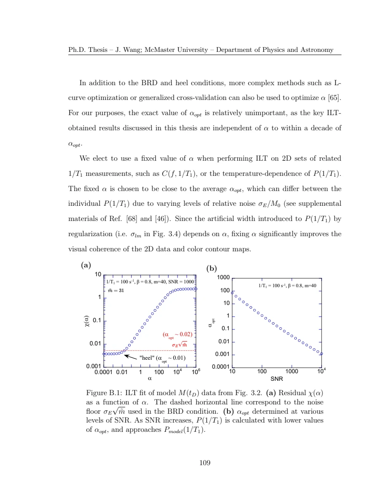

Wang · supplied source 2024 · chapter unit
9 · Appendices: stabilize the inverse and audit the conclusion
Regularization is an explicit analysis decision; reliable interpretation tests stable features and experimental visibility.
The question: How are α and noise handled, and which uncertainties remain?
Before you start: the terms you need
- Quantum spin liquid candidate: a material tested against a quantum-disordered model; a null ordering signal is insufficient identification.
- K: local resonance shift, sensitive to a coupling-weighted static susceptibility.
- 1/T₁: recovery rate that samples fluctuations in the probe frequency window.
- ILT: constrained, regularized inference of a relaxation-rate distribution from recovery data.
- log-rate density: probability is the area in d log₁₀(1/T₁), not peak height.
See → explain → check
Follow the idea in 2 pictures.
Picture 1 / 2
Compress without inventing information
Look for: Weak singular directions are poorly supported by noisy data.
Swipe across the picture to read every label, or enlarge it below.
- Kernel + recovery
- Retained singular directions
- Constrained regularized solve
Computational schematic, not tested analysis software.
Compression helps computation but does not restore unmeasured delays.
Check the original: Original PDF p. 119 · Original PDF p. 120
Picture 2 / 2
A map needs an audit trail
Look for: Stable inferred features and visibility checks support interpretation.
Swipe across the picture to read every label, or enlarge it below.
- Residual check
- Parameter stability
- Acquisition visibility
Different checks address different failure modes.
Presentation quality is separate from scientific identifiability.
Check the original: Original PDF p. 121 · Original PDF p. 122 · Original PDF p. 123
Explain it back.
Try answering aloud before opening the explanation.
Does more regularization mean a physically broader distribution?
Not necessarily. Regularization itself can broaden the inferred weights, even for a known single-rate model.
Why inspect residual patterns as well as their norm?
A small total residual can still hide structured model mismatch, offsets or inaccurate preparation assumptions.
Go deeper Follow the full argument
SVD compression is a computational step
Appendix A decomposes the kernel into singular directions and retains those above a chosen threshold associated with the noise scale. It projects the recovery into the retained basis, then solves the nonnegative regularized problem. This compression helps efficiency and removes poorly supported directions, but it cannot add experimental information. The residual and noise comparison must be calculated in the same space. Be careful with matrix dimensions and normalization when translating notation into code; the guide explains the principle without presenting a tested replica of the author’s implementation.
Noise and systematic mismatch need different attention
Appendix B compares the fit residual with the expected random-noise norm, using the number of retained or original data directions as appropriate. It also defines a heel condition on the log-residual versus log-α slope, selecting a lower-bound regularization to avoid unstable fits when simple random-noise assumptions are insufficient. The adopted α is the larger of the two choices. This is the author’s procedure for the stated numerical model, not a claim that one α is optimal for every measurement. Residual structure can indicate kernel mismatch, offsets or preparation issues even when its overall magnitude is small.
Maps and scientific inference
The thesis uses fixed α across related frequency or temperature maps, chosen near representative optimum values, because regularization creates width that should be comparable between slices. This improves visual coherence, although varying SNR can still create varying effective resolution. A clean-looking map is therefore insufficient acceptance evidence. Check reconstructed recoveries, stable features under reasonable α variation, transition-specific factors, fastest and slowest represented rates, echo visibility and frequency sampling. The conclusion’s three material stories are valuable precisely because the source keeps local distributions and complementary observables. Extending the method to another dataset requires repeating these checks rather than inheriting the plotted components.
Original PDF p. 116 · Original PDF p. 117 · Original PDF p. 118 · Original PDF p. 123
Translate the mathematics Essential equations and their meaning
χ(α) = ‖M − KPα‖; χtarget ≈ σ√m
Symbols: σ: per-point random-noise scale; m: number of data directions in the chosen space.
A discrepancy criterion conditional on random-noise assumptions. Use the compressed dimension after the stated SVD projection.
αopt = max(αBRD, αheel)
Symbols: BRD: noise-residual criterion; heel: lower-bound slope criterion.
This source combines the two criteria; systematic errors and kernel validity still require scrutiny.
Read the evidence Guided original source pages

Original PDF p. 123
What the evidence supports—and where it stops
- The guide and explorer do not implement or validate the author’s ILT analysis program.
Source version, reading coverage and preservation
All substantive text in Chapters 1–7, the reprinted research article and numerical appendices read; original working kernels, equations and key result figures visually checked.
Reviewed body pages: 15, 16, 17, 18, 19, 20, 21, 22, 23, 24, 25, 26, 27, 28, 29, 30, 31, 32, 33, 34, 35, 36, 37, 38, 39, 40, 41, 42, 43, 44, 45, 46, 47, 48, 49, 50, 51, 52, 53, 54, 55, 56, 57, 58, 59, 60, 61, 62, 63, 64, 65, 66, 67, 68, 69, 70, 71, 72, 73, 74, 75, 76, 77, 78, 79, 80, 81, 82, 84, 85, 86, 87, 88, 89, 90, 91, 92, 93, 94, 95, 96, 97, 98, 99, 100, 101, 102, 103, 104, 105, 106, 107, 108, 109, 110, 111, 112, 113, 114, 115, 116, 117, 118, 119, 120, 121, 122, 123. Personal acknowledgements omitted from teaching content. Bibliographies and external supplements not independently re-read; only material actually present in the thesis is covered.
Source SHA-256: 80ad8aaad2ce3f48320bef046c30907939f8018990292aa5ebb7e5269d912da2. Original file bytes preserved locally; public scientific page images are rendered from that source.
Thesis - Wang - 2024 - Disordered spin liquids - NMR and inverse Laplace analysis.pdf